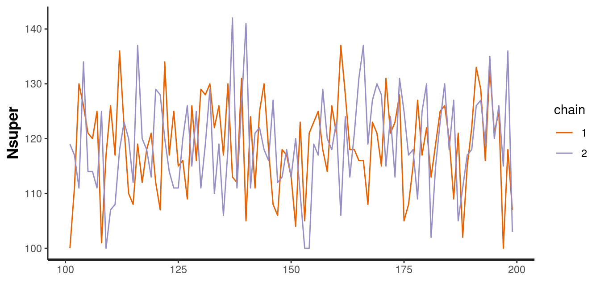

An introduction to mrmr
intro-to-mrmr.RmdThe mrmr package is designed to simplify and expedite mark recapture data processing, parameter estimation, and visualization for a narrow class of mark recapture data (namely, those collected by the Sierra Nevada Amphibian Research Group).
Workflow overview
The typical workflow involves three steps:
- Cleaning mark recapture data with
mrmr::clean_data() - Fitting a mark recapture model with
mrmr::fit_model() - Visualizing results with
mrmr::plot_model()
Data specifications
The package comes with example data that illustrate the expected format. Three files are needed.
The first file specifies capture data:
library(dplyr)
#>
#> Attaching package: 'dplyr'
#> The following objects are masked from 'package:stats':
#>
#> filter, lag
#> The following objects are masked from 'package:base':
#>
#> intersect, setdiff, setequal, union
library(readr)
library(tibble)
library(rstan)
#> Loading required package: StanHeaders
#> Loading required package: ggplot2
#> rstan (Version 2.19.3, GitRev: 2e1f913d3ca3)
#> For execution on a local, multicore CPU with excess RAM we recommend calling
#> options(mc.cores = parallel::detectCores()).
#> To avoid recompilation of unchanged Stan programs, we recommend calling
#> rstan_options(auto_write = TRUE)
library(mrmr)captures <- system.file("extdata",
"capture-example.csv",
package = "mrmr") %>%
read_csv
#> Parsed with column specification:
#> cols(
#> swab_id = col_character(),
#> pit_tag_id = col_double(),
#> site_id = col_double(),
#> survey_date = col_date(format = ""),
#> surveyor1 = col_character(),
#> pit_tag_status = col_character(),
#> frog_sex = col_character(),
#> frog_state = col_character(),
#> frog_weight = col_double(),
#> frog_svl = col_double(),
#> swabber_name = col_character(),
#> treatment = col_character(),
#> collection_date = col_date(format = ""),
#> collection_location = col_double(),
#> release_location = col_double(),
#> release_date = col_date(format = ""),
#> standard_type = col_character(),
#> load = col_double(),
#> category = col_character()
#> )
glimpse(captures)
#> Observations: 466
#> Variables: 19
#> $ swab_id <chr> NA, NA, NA, NA, NA, NA, NA, NA, NA, NA, NA, NA, N…
#> $ pit_tag_id <dbl> 9.00043e+14, 9.00043e+14, 9.00043e+14, 9.00043e+1…
#> $ site_id <dbl> 70449, 70449, 70449, 70449, 70449, 70449, 70449, …
#> $ survey_date <date> 2014-08-07, 2015-08-16, 2014-07-11, 2015-08-15, …
#> $ surveyor1 <chr> "Killion", "Killion", "Demaranville", "Lindauer",…
#> $ pit_tag_status <chr> NA, NA, NA, NA, NA, NA, NA, NA, NA, NA, NA, NA, N…
#> $ frog_sex <chr> "M", "F", "M", "M", "F", "F", "M", "M", "F", "F",…
#> $ frog_state <chr> "Healthy", "Healthy", "Healthy", "Healthy", "Heal…
#> $ frog_weight <dbl> NA, NA, NA, NA, NA, NA, NA, NA, NA, NA, NA, NA, N…
#> $ frog_svl <dbl> NA, NA, NA, NA, NA, NA, NA, NA, NA, NA, NA, NA, N…
#> $ swabber_name <chr> NA, NA, NA, NA, NA, NA, NA, NA, NA, NA, NA, NA, N…
#> $ treatment <chr> "unexposed", "exposed", "unexposed", "unexposed",…
#> $ collection_date <date> 2014-06-27, 2014-06-23, 2014-06-27, 2014-06-27, …
#> $ collection_location <dbl> 72996, 72996, 72996, 72996, 72996, 72996, 72996, …
#> $ release_location <dbl> 70449, 70449, 70449, 70449, 70449, 70449, 70449, …
#> $ release_date <date> 2014-06-28, 2014-06-28, 2014-06-28, 2014-06-28, …
#> $ standard_type <chr> NA, NA, NA, NA, NA, NA, NA, NA, NA, NA, NA, NA, N…
#> $ load <dbl> NA, NA, NA, NA, NA, NA, NA, NA, NA, NA, NA, NA, N…
#> $ category <chr> "translocated", "translocated", "translocated", "…Note that the system.file function generates a path to the capture-example.csv file, but in a real application, you would likely use a path to a local file (real data, not the example data included in the package). The files must be formatted with the same columns and conventions uesd in the example data. Each row in this file represents a capture or recapture event.
The second file specifies translocation data:
translocations <- system.file("extdata",
"translocation-example.csv",
package = "mrmr") %>%
read_csv
#> Parsed with column specification:
#> cols(
#> swab_id = col_character(),
#> pit_tag_id = col_double(),
#> treatment = col_character(),
#> release_date = col_date(format = ""),
#> swabbing_date = col_date(format = ""),
#> pit_tag_status = col_character(),
#> frog_sex = col_character(),
#> frog_state = col_character(),
#> frog_location = col_character(),
#> frog_weight = col_double(),
#> frog_svl = col_double(),
#> swabber_name = col_character(),
#> frog_comments = col_character(),
#> quant_cycle = col_double(),
#> start_quant = col_double(),
#> standard_type = col_character(),
#> load = col_double()
#> )
glimpse(translocations)
#> Observations: 80
#> Variables: 17
#> $ swab_id <chr> "RKS16752", "RKS16755", "RKS16756", "RKS16757", "RKS16…
#> $ pit_tag_id <dbl> 9.00043e+14, 9.00043e+14, 9.00043e+14, 9.00043e+14, 9.…
#> $ treatment <chr> "exposed", "exposed", "exposed", "exposed", "exposed",…
#> $ release_date <date> 2014-06-28, 2014-06-28, 2014-06-28, 2014-06-28, 2014-…
#> $ swabbing_date <date> 2014-06-23, 2014-06-23, 2014-06-23, 2014-06-23, 2014-…
#> $ pit_tag_status <chr> "Y", "Y", "Y", "Y", "Y", "Y", "Y", "Y", "Y", "Y", "Y",…
#> $ frog_sex <chr> "F", "F", "M", "M", "M", "F", "F", "F", "M", "F", "F",…
#> $ frog_state <chr> "Healthy", "Healthy", "Healthy", "Healthy", "Healthy",…
#> $ frog_location <chr> "in lake", "in lake", "in lake", "in lake", "in lake",…
#> $ frog_weight <dbl> 11, 13, 12, 10, 10, 10, 11, 13, 13, 11, 10, 11, 11, 10…
#> $ frog_svl <dbl> 46, 51, 44, 42, 44, 40, 45, 48, 49, 47, 48, 47, 46, 44…
#> $ swabber_name <chr> "Kauffman", "Kauffman", "Kauffman", "Kauffman", "Kauff…
#> $ frog_comments <chr> "Treated, for translocation to 70449.", "Treated, for …
#> $ quant_cycle <dbl> 35.72, 26.40, 28.51, 34.27, 36.12, 28.55, 31.44, 27.37…
#> $ start_quant <dbl> 0.09, 51.65, 12.33, 0.25, 0.07, 12.03, 1.68, 26.74, 0.…
#> $ standard_type <chr> "genomic", "genomic", "genomic", "genomic", "genomic",…
#> $ load <dbl> 432, 247920, 59184, 1200, 336, 57744, 8064, 128352, 19…Each row corresponds to a translocation event of one unique individual.
The third file specifies survey-level data:
surveys <- system.file("extdata",
"survey-example.csv",
package = "mrmr") %>%
read_csv
#> Parsed with column specification:
#> cols(
#> survey_date = col_date(format = ""),
#> primary_period = col_double(),
#> secondary_period = col_double(),
#> survey_duration = col_double()
#> )
glimpse(surveys)
#> Observations: 51
#> Variables: 4
#> $ survey_date <date> 2014-06-28, 2014-07-10, 2014-07-11, 2014-07-12, 201…
#> $ primary_period <dbl> 1, 2, 2, 2, 3, 3, 3, 4, 4, 4, 5, 5, 5, 6, 6, 6, 7, 7…
#> $ secondary_period <dbl> 0, 1, 2, 3, 1, 2, 3, 1, 2, 3, 1, 2, 3, 1, 2, 3, 1, 2…
#> $ survey_duration <dbl> 0.00, 7.61, 7.00, 5.35, 7.33, 7.58, 8.16, 7.58, 7.85…Here, each row is a unique survey.
Data processing
To load and process the data, provide paths to the data files as arguments to the mrmr::clean_data() function:
The output provides data frames as list elements, and a list element called stan_d, which contains data that has been pre-processed for model fitting.
Including detection/non-detection covariates
Survey-level covariates that might affect the probability of detection can be included via the capture_formula argument to clean_data. Note: it is a good idea to ensure that any continuous covariates are rescaled prior to using them as covariates to have mean = 0 and unit standard deviation. This can be acheived by adding a column to the captures data Using a covariate value like year, which typically has a mean in the thousands and a standard deviation far from one will almost assurredly result in numerical issues when fitting a model.
Assuming we wanted to include a covariate for detection like person_hours, we can do so as follows:
Including survival covariates
Individual-level survival covariates can be included optionally via the survival_formula and survival_fill_value arguments. Both of these must be specified, because covariate values for pseudo-individuals must be filled in (they are never observed). So, for example, to evaluate the effect of an experimental treatment, if some individuals belong to a “treatment” group and others belong to an “control” group, then a group must be specified as a fill value (e.g., “wild-caught” or “control”, depending on the experiment):
Model structure
The mrmr package implements a Bayesian open-population Jolly-Seber mark recapture model with known additions to the population (introduced adults). The model tracks the states of \(M\) individuals that comprise a superpopulation made up of real and pseudo-individuals (see Joseph and Knapp 2018, Ecosphere for details).
We assume a robust sampling design where the states of individuals are constant within primary periods, which have repeat secondary periods within them (during which observations are made). The possible states of individuals include “not recruited”, “alive”, and “dead”. The possible observations of individuals include “detected” and “not detected”. We assume that individuals that are in the “not recruited” or “dead” states are never detected (i.e., there are no mistakes in the individual PIT tag ID records).
Model fitting
To fit a mark-recapture model, use mrmr::fit_model(). This model accounts for known introductions into the population, and has random effects to account for variation in survival and recruitment through time. The example below uses two chains and relatively few iterations for speed, but it is a good idea to run 3+ chains, and at least 1000 iterations.
mod <- fit_model(data, cores = parallel::detectCores(),
chains = 2, iter = 200)
#> Running /usr/lib/R/bin/R CMD SHLIB foo.c
#> gcc -std=gnu99 -I"/usr/share/R/include" -DNDEBUG -I"/home/mjoseph/R/x86_64-pc-linux-gnu-library/3.6/Rcpp/include/" -I"/usr/lib/R/site-library/RcppEigen/include/" -I"/usr/lib/R/site-library/RcppEigen/include/unsupported" -I"/home/mjoseph/R/x86_64-pc-linux-gnu-library/3.6/BH/include" -I"/usr/lib/R/site-library/StanHeaders/include/src/" -I"/usr/lib/R/site-library/StanHeaders/include/" -I"/home/mjoseph/R/x86_64-pc-linux-gnu-library/3.6/rstan/include" -DEIGEN_NO_DEBUG -D_REENTRANT -DBOOST_DISABLE_ASSERTS -DBOOST_PENDING_INTEGER_LOG2_HPP -include stan/math/prim/mat/fun/Eigen.hpp -fpic -g -O2 -fdebug-prefix-map=/build/r-base-V28x5H/r-base-3.6.3=. -fstack-protector-strong -Wformat -Werror=format-security -Wdate-time -D_FORTIFY_SOURCE=2 -g -c foo.c -o foo.o
#> In file included from /usr/lib/R/site-library/RcppEigen/include/Eigen/Core:88:0,
#> from /usr/lib/R/site-library/RcppEigen/include/Eigen/Dense:1,
#> from /usr/lib/R/site-library/StanHeaders/include/stan/math/prim/mat/fun/Eigen.hpp:13,
#> from <command-line>:0:
#> /usr/lib/R/site-library/RcppEigen/include/Eigen/src/Core/util/Macros.h:613:1: error: unknown type name ‘namespace’
#> namespace Eigen {
#> ^~~~~~~~~
#> /usr/lib/R/site-library/RcppEigen/include/Eigen/src/Core/util/Macros.h:613:17: error: expected ‘=’, ‘,’, ‘;’, ‘asm’ or ‘__attribute__’ before ‘{’ token
#> namespace Eigen {
#> ^
#> In file included from /usr/lib/R/site-library/RcppEigen/include/Eigen/Dense:1:0,
#> from /usr/lib/R/site-library/StanHeaders/include/stan/math/prim/mat/fun/Eigen.hpp:13,
#> from <command-line>:0:
#> /usr/lib/R/site-library/RcppEigen/include/Eigen/Core:96:10: fatal error: complex: No such file or directory
#> #include <complex>
#> ^~~~~~~~~
#> compilation terminated.
#> /usr/lib/R/etc/Makeconf:168: recipe for target 'foo.o' failed
#> make: *** [foo.o] Error 1To diagnose potential non-convergence of the MCMC algorithm, inspect traceplots:
pars_to_plot <- c('alpha_lambda',
'sigma_lambda',
'beta_phi',
'sigma_phi',
'beta_detect')
traceplot(mod$m_fit, pars = pars_to_plot)It is also a good idea to look at Rhat estimates to see whether they indicate of a lack of convergence (Rhat values \(\geq\) 1.01):
print(mod$m_fit, pars = pars_to_plot)
#> Inference for Stan model: two-state.
#> 2 chains, each with iter=200; warmup=100; thin=1;
#> post-warmup draws per chain=100, total post-warmup draws=200.
#>
#> mean se_mean sd 2.5% 25% 50% 75% 97.5% n_eff Rhat
#> alpha_lambda -4.70 0.05 0.50 -5.50 -5.07 -4.74 -4.38 -3.66 93 1.00
#> sigma_lambda 2.05 0.05 0.55 1.23 1.63 1.97 2.30 3.43 107 1.00
#> beta_phi[1] 1.85 0.03 0.35 1.11 1.62 1.87 2.08 2.53 125 1.01
#> sigma_phi 1.17 0.04 0.40 0.54 0.90 1.11 1.39 1.99 94 1.01
#> beta_detect[1] -0.39 0.00 0.06 -0.51 -0.44 -0.40 -0.35 -0.27 181 1.00
#>
#> Samples were drawn using NUTS(diag_e) at Sat Mar 14 10:47:22 2020.
#> For each parameter, n_eff is a crude measure of effective sample size,
#> and Rhat is the potential scale reduction factor on split chains (at
#> convergence, Rhat=1).Built-in visualizations
Time series of abundance, recruitment, and survival of introduced cohorts are available through the mrmr::plot_model() function.


Translocation survival tables
If individuals have been translocated into sites, you can generate a table of estimated survival through time as a function of years since introduction:
survival_table(mod)
#> Joining, by = "pit_tag_id"
#> Joining, by = "primary_period"
#> # A tibble: 5 x 4
#> years_since_introduction lo_survival median_survival hi_survival
#> <dbl> <dbl> <dbl> <dbl>
#> 1 0 0.55 0.689 0.800
#> 2 1 0.3 0.45 0.610
#> 3 2 0.06 0.165 0.315
#> 4 3 0 0.08 0.2
#> 5 4 0 0.05 0.16Custom visualizations
Any of the plotting functionality that you would expect from a stanfit model is available as well, by accessing the m_fit list element from a model object. For example, we could assess the posterior for the superpopulation size:

Cases with no translocations
In some cases, there may not be any introductions of animals into a population. The only difference in implementation in such cases is that the translocations argument to clean_data() can be omitted:
Cases with known removals
When individuals are removed from a population, e.g., for translocation, these known removals can be included as data to increase the precision of abundance estimates. An example dataset fitting this case is included at an imaginary site called “Equid”. Note below that we filter out dead animals – any dead animals encountered on surveys should be in the removals data, and not in the captures data frame, which should only contain live animals (those that might survive to the next primary period).
captures <- system.file("extdata",
"equid-captures.csv",
package = "mrmr") %>%
read_csv %>%
filter(capture_animal_state != 'dead')
surveys <- system.file("extdata",
"equid-surveys.csv",
package = "mrmr") %>%
read_csv
removals <- system.file("extdata",
"equid-removals.csv",
package = "mrmr") %>%
read_csv
d <- clean_data(captures, surveys, removals = removals)
m <- fit_model(d, cores = 2, chains = 2)